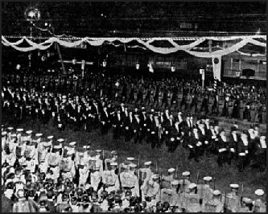

(Frederick)The Meiji Government focused heavily on Militarization as part of the Japanese desires to become dominant in east Asia. Militarization is a common feature of heavily nationalistic countries, and also shows a adoption of the practices of Western Empires, building up a powerful military in order to colonize and conquer outside territories.